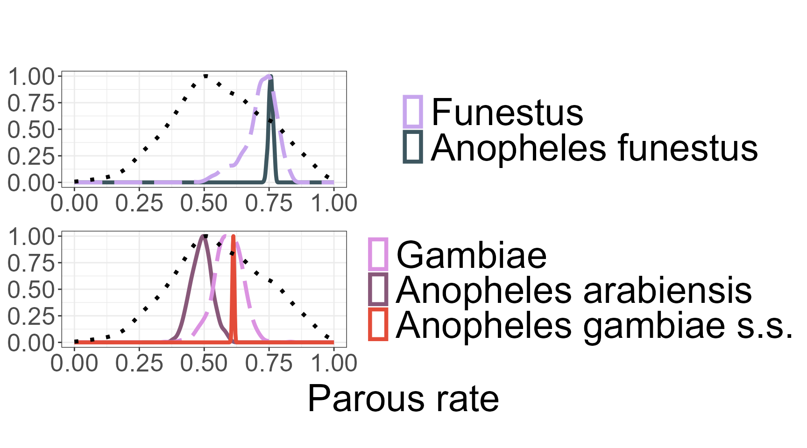

Introduction_to_AnophelesBionomics.Rmd
library(AnophelesBionomics)This R package provides tools to estimate key bionomics parameters for mosquitoe species using a Bayesian hierarchical model that borrows strength across taxonomic levels (species, species complex, and genus).
We prepare and standardize the input data using taxonomy-aware filtering functions. We then fit a robust Bayesian hierarchical model using rstan. To better understand the observed patterns, we visualize data distributions by species and complex. Finally, we explore the posterior parameter distributions using static density plots generated with ggplot2, as well as interactive charts built with plotly for more intuitive inspection.
Even when species-specific data is missing, the model can infer parameter values using information from related taxa, thanks to taxonomic structure. The approach combines internal datasets included in the package user-provided external data The estimation relies on the No-U-Turn Sampler (NUTS) implemented via rstan, and includes tools for data preparation, posterior diagnostics, and interactive visualization.
The model focuses on estimating the following mosquito-related parameters:
parous_rate: Proportion of parous
females out of observed females.
endophagy: Proportion of mosquitoes
biting indoors versus outdoors.
endophily: Proportion of mosquitoes
resting indoors after having blood-fed.
HBI: Human blood inde, the
proportion of human blood in the blood meal ingested by
mosquitoes.
indoor_HBI: Human blood index for
mosquitoes collected indoors
outdoor_HBI: Human blood index for
mosquitoes collected outdoors.
sac_rate: Proportion of parous
females which have oviposited less than 24 hours before being
collected.
The necessary and optional packages required to run the package are listed in the appendix.
The creation_df() function is designed to preprocess raw entomological data for Bayesian modeling of mosquito bionomic traits. To use it, the user simply specifies the variable of interest — such as Human Blood Index (HBI), endophagy, or endophily — via the varname argument. This variable corresponds to a specific mosquito bionomics
For basic use, only varname is required:
data <- creation_df("endophily")
#> [1] "Total observations: 38"
#> [1] "denominator is always larger or equal to numerator: good!"When executed, the function returns informative messages in the console : it reports the number of observations retained after filtering (e.g., “Total observations: 90”) and verifies the internal consistency of the data structure by checking that denominators are always greater than or equal to numerators in proportion calculations (e.g., “denominator is always larger or equal to numerator: good!”). These checks help ensure data integrity before downstream analysis.
Optionally, users can apply geographic and temporal filters to refine the dataset. The geo parameter allows restriction to specific regions. Available region codes are “Africa-E” (Eastern Africa), “Africa-W” (Western Africa), “Americas”, “Asia-Pacific”, and NA for unspecified or global studies. The year_min and year_max parameters allow filtering by study period, based on the year of data collection:
data <- creation_df(varname = "parous_rate",
geo = c("Africa-W", "Americas"),
year_min = 1900,
year_max = 2020)
#> [1] "Total observations: 226"
#> [1] "denominator is always larger or equal to numerator: good!"Internally, the function filters the dataset according to the selected region(s) and time period, extracts the relevant observations for the chosen bionomic parameter, and calculates proportions as needed. It excludes studies not suitable for behavioral inference, handles data from insecticide intervention contexts, and harmonizes mosquito species names. Species are also grouped into complexes when appropriate, enabling hierarchical modeling.
In addition to using internal data, users can also integrate their own external dataset by supplying it through the extern_data argument. This allows appending custom observations to the internal database before preprocessing. The external data must match the internal structure in terms of column names and data types. The rules for formatting this external dataset are provided in the Appendix.
Here’s a minimal working example of external data for the parous_rate trait:
extern_data <- data.frame(
species = c("Anopheles arabiensis", "Anopheles arabiensis"),
insecticide_control = c("f", "f"),
country = c("Benin", "Benin"),
year_start = c(2010, 2012),
parity_n = c(45, 30),
parity_total = c(100, 60),
parity_percent = c(45, 50),
stringsAsFactors = FALSE
)You can include this data in the main function call as follows:
data <- creation_df(varname = "parous_rate",
geo = c("Africa-W", "Americas"),
year_min = 1900,
year_max = 2020, extern_data = extern_data)
#> [1] "Total observations: 228"
#> [1] "denominator is always larger or equal to numerator: good!"The external data is automatically combined with the internal dataset during preprocessing. If some required columns are missing in extern_data, the function will still run but will exclude those external data rows missing necessary columns, and it will display a message specifying which columns were missing. This allows the internal data to be processed normally while warning the user about incomplete external data.
Make sure your dataset follows the expected structure (see Appendix for a complete column specification) to ensure full integration of your external observations.
The output is a named list containing four elements: (1) data.req, the fully cleaned and filtered dataset, (2) nice_varname, a human-readable label suitable for outputs, (3) species_complex, a reference table mapping species and species complexes to numeric identifiers, and (4) varname, the name of the selected mosquito bionomic parameter.
This function ensures consistent and reproducible preparation of entomological data, focusing on a single mosquito trait per run, and is optimized for integration into Bayesian analysis pipelines.
The function obs_complex_species_pie() allows users to visualize the distribution of mosquito observations by species or complex through an interactive pie chart. The function calculates observation proportions and consolidates species with very low representation into an “Other” category based on a user-defined threshold. Additionally, the resulting visualization can be saved as a standalone HTML file if a directory is specified.
When hovering over a slice, detailed information is displayed, including the species or complex name, the total number of observations, the number of survey rows, the mean and standard deviation of the observed values, and the proportion of the total.
This function expects as input a list structured as the output of the creation_df() function, which contains a cleaned data frame with observation counts identified by a variable name pattern, the base name of the variable, and a user-friendly label for output naming. The user can adjust the minimum proportion threshold that determines when rare species are grouped together. For example, setting this threshold to 0.05 means that all categories whose combined total accounts for 5% or less of the observations are grouped into “Other”. Finally the user can chose a path in order to save his pie. For instance, after preparing the data using the preprocessing pipeline, a user might call:
obs_complex_species_pie(data, threshold_prop_other = 0.05)
#> Proportion de la catégorie 'Other' : 3.08%Similarly, obs_region_pie() generates an interactive pie chart displaying the geographic distribution of mosquito observations. It calculates proportional contributions from regions and labels missing regions as “Unspecified”.
This function also takes as input a list matching the structure returned by creation_df(), ensuring consistent data formatting.For instance, after preparing the data using the preprocessing pipeline, a user might call:
obs_region_pie(data,
plot_dir = "path/to/save/directory/")Both functions produce interactive Plotly charts that facilitate exploratory data analysis and can be seamlessly integrated into reporting workflows.
The function run_stan() performs hierarchical Bayesian binomial modeling using the rstan package to estimate the distribution of the bionomics, across mosquito species and complexes. It executes the complete modeling workflow, which includes preparing data in a format compatible with Stan via the prepare_stan_data() function, compiling the Stan model, and conducting sampling.
By default, the model runs with 2000 iterations per chain, including a warmup (burn-in) period of 400 iterations, distributed over four independent chains. These parameters — including the total number of iterations, the number of chains, and the thinning interval applied to posterior samples — can be customized by the user to control the length and quality of the sampling process.
The input data must be a cleaned dataset structured as the output from the creation_df() function, containing all necessary variables, including species and complex identifiers, required for model fitting.
Upon completion, the function returns a named list containing several components. The most important of these is the fit element, which is a stanfit object representing the fitted model. This object provides access to posterior distributions of estimated parameters, allowing detailed inspection of species- and complex-level effects. For example, if the function is called as
run_stan_result <- run_stan(data, iter = 1000, chains = 3)
#>
#> SAMPLING FOR MODEL 'anon_model' NOW (CHAIN 1).
#> Chain 1:
#> Chain 1: Gradient evaluation took 0.000164 seconds
#> Chain 1: 1000 transitions using 10 leapfrog steps per transition would take 1.64 seconds.
#> Chain 1: Adjust your expectations accordingly!
#> Chain 1:
#> Chain 1:
#> Chain 1: Iteration: 1 / 1000 [ 0%] (Warmup)
#> Chain 1: Iteration: 100 / 1000 [ 10%] (Warmup)
#> Chain 1: Iteration: 200 / 1000 [ 20%] (Warmup)
#> Chain 1: Iteration: 201 / 1000 [ 20%] (Sampling)
#> Chain 1: Iteration: 300 / 1000 [ 30%] (Sampling)
#> Chain 1: Iteration: 400 / 1000 [ 40%] (Sampling)
#> Chain 1: Iteration: 500 / 1000 [ 50%] (Sampling)
#> Chain 1: Iteration: 600 / 1000 [ 60%] (Sampling)
#> Chain 1: Iteration: 700 / 1000 [ 70%] (Sampling)
#> Chain 1: Iteration: 800 / 1000 [ 80%] (Sampling)
#> Chain 1: Iteration: 900 / 1000 [ 90%] (Sampling)
#> Chain 1: Iteration: 1000 / 1000 [100%] (Sampling)
#> Chain 1:
#> Chain 1: Elapsed Time: 2.744 seconds (Warm-up)
#> Chain 1: 4.706 seconds (Sampling)
#> Chain 1: 7.45 seconds (Total)
#> Chain 1:
#>
#> SAMPLING FOR MODEL 'anon_model' NOW (CHAIN 2).
#> Chain 2:
#> Chain 2: Gradient evaluation took 3.4e-05 seconds
#> Chain 2: 1000 transitions using 10 leapfrog steps per transition would take 0.34 seconds.
#> Chain 2: Adjust your expectations accordingly!
#> Chain 2:
#> Chain 2:
#> Chain 2: Iteration: 1 / 1000 [ 0%] (Warmup)
#> Chain 2: Iteration: 100 / 1000 [ 10%] (Warmup)
#> Chain 2: Iteration: 200 / 1000 [ 20%] (Warmup)
#> Chain 2: Iteration: 201 / 1000 [ 20%] (Sampling)
#> Chain 2: Iteration: 300 / 1000 [ 30%] (Sampling)
#> Chain 2: Iteration: 400 / 1000 [ 40%] (Sampling)
#> Chain 2: Iteration: 500 / 1000 [ 50%] (Sampling)
#> Chain 2: Iteration: 600 / 1000 [ 60%] (Sampling)
#> Chain 2: Iteration: 700 / 1000 [ 70%] (Sampling)
#> Chain 2: Iteration: 800 / 1000 [ 80%] (Sampling)
#> Chain 2: Iteration: 900 / 1000 [ 90%] (Sampling)
#> Chain 2: Iteration: 1000 / 1000 [100%] (Sampling)
#> Chain 2:
#> Chain 2: Elapsed Time: 1.795 seconds (Warm-up)
#> Chain 2: 1.284 seconds (Sampling)
#> Chain 2: 3.079 seconds (Total)
#> Chain 2:
#>
#> SAMPLING FOR MODEL 'anon_model' NOW (CHAIN 3).
#> Chain 3:
#> Chain 3: Gradient evaluation took 4.4e-05 seconds
#> Chain 3: 1000 transitions using 10 leapfrog steps per transition would take 0.44 seconds.
#> Chain 3: Adjust your expectations accordingly!
#> Chain 3:
#> Chain 3:
#> Chain 3: Iteration: 1 / 1000 [ 0%] (Warmup)
#> Chain 3: Iteration: 100 / 1000 [ 10%] (Warmup)
#> Chain 3: Iteration: 200 / 1000 [ 20%] (Warmup)
#> Chain 3: Iteration: 201 / 1000 [ 20%] (Sampling)
#> Chain 3: Iteration: 300 / 1000 [ 30%] (Sampling)
#> Chain 3: Iteration: 400 / 1000 [ 40%] (Sampling)
#> Chain 3: Iteration: 500 / 1000 [ 50%] (Sampling)
#> Chain 3: Iteration: 600 / 1000 [ 60%] (Sampling)
#> Chain 3: Iteration: 700 / 1000 [ 70%] (Sampling)
#> Chain 3: Iteration: 800 / 1000 [ 80%] (Sampling)
#> Chain 3: Iteration: 900 / 1000 [ 90%] (Sampling)
#> Chain 3: Iteration: 1000 / 1000 [100%] (Sampling)
#> Chain 3:
#> Chain 3: Elapsed Time: 1.427 seconds (Warm-up)
#> Chain 3: 2.305 seconds (Sampling)
#> Chain 3: 3.732 seconds (Total)
#> Chain 3:
#> Warning: There were 5 divergent transitions after warmup. See
#> https://mc-stan.org/misc/warnings.html#divergent-transitions-after-warmup
#> to find out why this is a problem and how to eliminate them.
#> Warning: Examine the pairs() plot to diagnose sampling problemsthe summary of the fitted model parameters can be viewed using
fit <- run_stan_result$fit
summary_stats <- rstan::summary(fit)$summary
head(summary_stats)
#> mean se_mean sd 2.5% 25% 50%
#> beta0 0.242517674 0.010188229 0.2707409 -0.2325045 0.04956901 0.21805878
#> beta1[1] 0.264495972 0.036804969 0.8847219 -1.4206958 -0.20620681 0.20570530
#> beta1[2] 0.021394340 0.009259912 0.3645550 -0.6723455 -0.21376572 0.01224399
#> beta1[3] -0.002061972 0.010614368 0.3618285 -0.6914079 -0.23164229 -0.01262263
#> beta1[4] 0.741534275 0.016675525 0.4083403 -0.0911462 0.48425768 0.76904928
#> beta1[5] 0.919185912 0.015601075 0.3376903 0.1271790 0.73218132 0.96572101
#> 75% 97.5% n_eff Rhat
#> beta0 0.4118828 0.7961600 706.1720 1.0010189
#> beta1[1] 0.7001469 2.1272757 577.8308 1.0040190
#> beta1[2] 0.2474174 0.7569739 1549.9308 0.9995769
#> beta1[3] 0.2106222 0.7482801 1162.0300 1.0012850
#> beta1[4] 1.0137346 1.4545290 599.6330 1.0049012
#> beta1[5] 1.1464329 1.4693422 468.5199 1.0087756Other returned elements include a mapping of species to species complexes, user-friendly and original variable names, and details about the sampling parameters used. These additional outputs are primarily intended to support downstream functions responsible for displaying and further analyzing the model results.
The plot_density() function is used to visualize the posterior distributions of model parameters after fitting a hierarchical Bayesian model via run_stan(). It generates smooth density plots that summarize the uncertainty associated with each estimated parameter, grouped by complex. These visual summaries provide an intuitive and interpretable view of the model outputs.
The function expects as input the full named list returned by run_stan(), which includes the fitted Stan model object (fit), the mapping between individual species and their associated complexes (species_complex), and a user-friendly variable label (nice_varname) used for titling and file naming. Line styles are used to distinguish levels: dotted lines for genus-level parameters, long-dashed lines for complexes-level, and solid lines for individual species-level. Colors are drawn from a predefined palette, with a fallback to default colors and warnings if certain groups are not defined.
Users can optionally filter the visualization to include only specific species complexes by supplying a vector to the complex_names argument. Parameters labeled with “unlabeled” can be excluded using the “unlabel = TRUE” option. If desired, the final plot can also be saved as a PNG file by specifying a valid path via the plot_dir argument.
For example, assuming the model has already been fitted and stored in an object called stan_result, the density plot can be generated and saved using the following code:
p <- plot_density(stan_results = run_stan_result,
complex_names = c("Gambiae", "Funestus"),
unlabel = TRUE)
#> Warning in get_plot_component(plot, "guide-box"): Multiple components found;
#> returning the first one. To return all, use `return_all = TRUE`.
print(p)
The funciton return a combined ggplot object containing
posterior density plots by species complex with a shared legend. If
plot_dir is specified, the plot is saved as a PNG image
file.
The function species_complex_result() extracts and summarizes posterior statistics from the hierarchical Bayesian model fitted using run_stan(). It produces a tidy data frame ready for analysis or reporting.
The summary includes formatted posterior estimates with confidence intervals, variance measures, and hierarchical metadata. An important feature is the option to set all = TRUE, which enables supplementation of missing species or complexes using the taxonomy. In this case, for species without direct data but associated with a species complex for which data exist, the function uses the complex-level estimates. If no data are available at the complex level, the genus-level estimates are used instead. This hierarchical borrowing of information ensures more complete coverage.
Two flags in the output help track this process: the data flag is set to TRUE if the estimate is derived from original observed data, and FALSE otherwise. The source_flag indicates the level at which the parameter estimate was taken—whether directly from species-level data, species complex, genus, or supplemented externally.
The function expects as input the full named list output from run_stan(), including the fitted Stan model (fit), the species-to-complex mapping (species_complex), and the original variable name (varname). Users can specify the confidence level for interval estimation, and optionally save the results as a CSV file by providing an output directory.
For example, assuming the fitted model results are stored in an object called stan_result, the posterior summaries can be extracted with:
summary_table <- species_complex_result(results = run_stan_result,
ci_level = 0.95,
all = TRUE)
head(summary_table)
#> name level estimate_ci variance ci_lower
#> 1 Anopheles genus 55.52% ± 36.06% (CI 95%) 3.013295e-02 0.1945526
#> 2 Funestus complex 71.03% ± 17.86% (CI 95%) 5.024724e-03 0.5317520
#> 3 Gambiae complex 58.89% ± 11.84% (CI 95%) 3.201060e-03 0.4705926
#> 4 Anopheles arabiensis species 48.99% ± 7.8% (CI 95%) 1.611226e-03 0.4131630
#> 5 Anopheles darlingi species 46.65% ± 3.23% (CI 95%) 2.685148e-04 0.4342010
#> 6 Anopheles funestus species 75.66% ± 1.76% (CI 95%) 7.674926e-05 0.7390068
#> ci_upper complex data source_flag
#> 1 0.8935260 <NA> TRUE NA
#> 2 0.8129574 <NA> TRUE NA
#> 3 0.6928048 <NA> TRUE NA
#> 4 0.5679127 Gambiae TRUE NA
#> 5 0.4987999 Anopheles darlingi_complex TRUE NA
#> 6 0.7731687 Funestus TRUE NAThis call produces a comprehensive table including credible intervals and variance estimates for each taxonomic group, borrowing information hierarchically where data are missing, and saves the result as a CSV file. The resulting data frame can then be used for further analysis, visualization, or reporting purposes.
In order to have the correct output for the Packae Anophles model, we have The function Bionomics_For_Anophles_Model(). It wraps and extends the logic of species_complex_result(), applying it sequentially to five core bionomic traits: Parous rate (M, M.sd), Endophagy (endophagy, endophagy.sd), Endophily (endophily, endophily.sd), sac rate (A0, A0.sd), human blood index (Chi)
Internally, for each of these parameters, the fonction prepares the data using creation_df(), runs the hierarchical Bayesian model with run_stan() and extracts posterior summaries via the internal function species_complex_result(). However, you don’t need to call any of these steps individually: Bionomics_For_Anophles_Model() automates the entire workflow. The resulting table aggregates posterior means and variances into a single, tidy data frame.
The function automatically standardizes species and complex names to ensure compatibility with the structure expected by the AnophelsModel package. This includes renaming known variants (e.g., ‘Anopheles gambiae s.s.’ → ‘Anopheles gambiae’ → ‘Gambiae complex’).
To use it, run:
bionomics_df <- Bionomics_For_Anophles_Model()
head(bionomics_df)The output format is specifically designed to plug directly into AnophelsModel.
The following is the full list of Anopheles species and species complexes included in the AnophelesBionomics package:
To successfully create a dataset repository using create_repo(), your dataset must include:
species — The mosquito species or
complex name.country — The country where the data
was collected.year_start — Enables filtering by time
periods later.insecticide_control — Should be “f”
for control and “t” for intervention.Optional but recommended:
source_id — A unique identifier for
the data source or study.citation — Full citation of the
study.pubmed_id — PubMed ID related to the
study, or NA if not available.To calculate parous rate, your dataset must include:
parity_n — Number of parous mosquitoes
(numerator). Use NA if only percentage is available.parity_total — Total number of
mosquitoes dissected (denominator).parity_percent — Percentage; used to
estimate parity_n if needed, NA otherwise.insecticide_control — Must be
“f”.To calculate endophagy, your dataset must include:
indoor_biting_n — Number of mosquitoes
biting indoors. Use NA if only percentage is available.indoor_biting_total — Total mosquitoes
biting (indoor + outdoor).indoor_biting — Percentage; used to
estimate indoor_biting_n if needed, NA otherwise.indoor_biting_sampling — Must be
“MBI”.outdoor_biting_sampling — Must be
“MBO”.HLC_same — Must be TRUE, indicatting
if the estimation used is Human Landing Catches ( adults sit indoors or
outdoors with their legs exposed and wait until a mosquito lands on
their legs to catch it ).insecticide_control — Must be
“f”.To calculate endophily, your dataset must include:
indoor_fed — Number of mosquitoes
resting indoors after having blood-fed.outdoor_fed — Number of mosquitoes
resting outdoors after having blood-fed.resting_unit — Must be either “%” or
“count”.If resting_unit is “%”, also include:
indoor_total — Total mosquitoes
observed indoors.outdoor_total — Total mosquitoes
observed outdoors.Additional required fields:
indoor_resting_sampling — Must be
“HRI”.outdoor_resting_sampling — Must be
“WinExit”.WinExit_in_HRI_houses — Must be
TRUE.insecticide_control — Must be
“t”.Optionally, if reconstructing totals:
indoor_unfed,
indoor_gravid
outdoor_unfed,
outdoor_gravid
To calculate sac rate, your dataset must include:
parous_with_sac — of parous females
which have oviposited less than 24 hours before being collected.sac_rate_percent — Percentage; used to
estimate parous_with_sac if needed, NA otherwise.insecticide_control — Must be
“t”.To calculate indoor human blood index (indoor HBI), your dataset must include:
indoor_host_n — Number of mosquitoes
having ingested human blood indoors.indoor_host_total — Number of
mosquitoes examined for blood meal origin indoors.indoor_host — Percentage; used to
estimate indoor_host_n if needed, NA otherwise.indoor_host_sampling — Must be one of
“HRI”, “ILT”, or “WinExit”.host_unit — Must NOT be “AI” (animal
index).insecticide_control — Must be
“f”.To calculate outdoor human blood index (outdoor HBI), your dataset must include:
outdoor_host_n — Number of mosquitoes
having ingested human blood outdoors.outdoor_host_total — Number of
mosquitoes examined for blood meal origin outdoors.outdoor_host — Percentage; used to
estimate outdoor_host_n if needed, NA otherwise.outdoor_host_sampling — Must be one of
“RO”, “RO (shelter)”, “RO (pit)”, or “WinExit”.host_unit — Must NOT be “AI” (animal
index).insecticide_control — Must be
“f”.If you have combined host sampling (no separation between indoor and outdoor), your dataset must also, as well that the precedente colomns include:
combined_host_n — Number of mosquitoes
having ingested human blood.combined_host_total — Number of
mosquitoes examined for blood meal origin.combined_host — Percentage; used to
estimate combined_host_n if needed, NA otherwise.combined_host_sampling_n — Must NOT be
“t”.combined_host_sampling_1 — Main
sampling method used, must be valid (different of ““).insecticide_control — Must be
“f”.